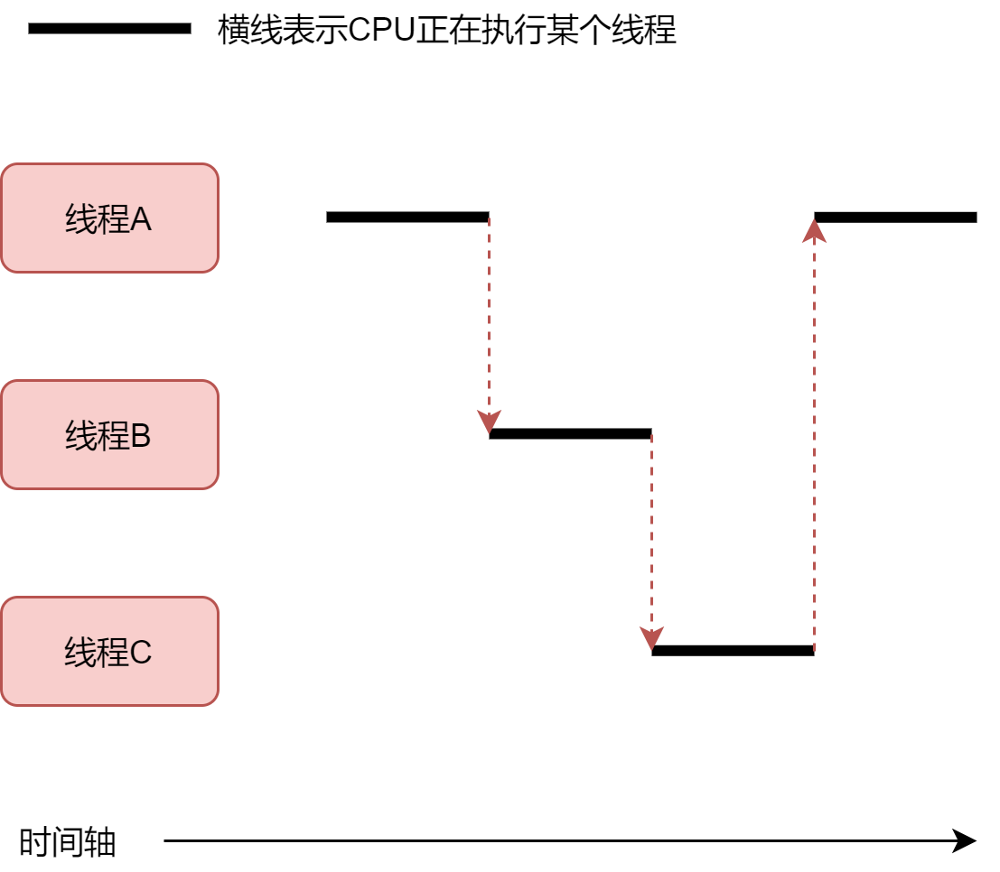
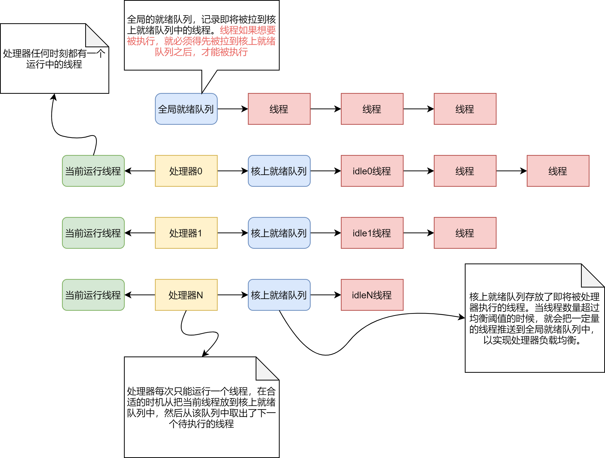

线程管理
一. 描述
内核的最小调度单位是线程，每个线程都有自己独立的栈，寄存器组，以及一些运行信息等。 以线程为最小调度单元的好处是可以很方便支持内核态以及用户态的多线程，并且层次框架也比较好，容易实现。
每个线程都有一个其对应的线程结构体，使用其来记录线程的信息，比如线程链表，线程状态，线程栈等基础信息。
在创建一个线程后，可以运行该线程，可以让线程去完成一些独立的工作。内核中的 idle 线程， deamon 线程等都有自己独立的工作任务。
二. 原理
当前实现的线程结构体如下：
struct NX_Thread
{
/* thread list */
NX_List list;
NX_List globalList;
NX_List exitList;
NX_List processList; /* list for process */
NX_Spin lock; /* lock for thread */
/* thread info */
NX_ThreadState state;
NX_I32 tid; /* thread id, -1 means no alloc failed */
NX_ThreadHandler handler;
void *threadArg;
char name[NX_THREAD_NAME_LEN];
/* thread stack */
NX_U8 *stackBase; /* stack base */
NX_Size stackSize;
NX_U8 *stack; /* stack top */
/* thread sched */
NX_U32 timeslice;
NX_U32 ticks;
NX_U32 fixedPriority; /* fixed priority, does not change dynamically */
NX_U32 priority; /* dynamic priority, or in the case of time-sharing scheduling priority will change dynamically */
NX_U32 needSched;
NX_U32 isTerminated;
NX_UArch onCore; /* thread on which core */
NX_UArch coreAffinity; /* thread would like to run on the core */
/* thread resource */
NX_ThreadResource resource;
};
typedef struct NX_Thread NX_Thread;
在线程结构体中，有链表，基础信息，栈信息，调度信息，以及内核的资源。
最开始，内核是没有线程概念的，处理器只有一个执行流。
在完成内核的初始化后，会创建 idle 线程，来保证处理器至少能够
拿到1个线程执行，避免内核跑飞。
当处理器调用 NX_SchedToFirstThread 的时候，就去获取一个线程来运行。
此时，处理器就进入线程环境，开启线程调度生涯。
每个线程执行一段时间后，就会切换到其它线程执行。这个切换可能是主动的，也可能是被动的。线程在阻塞（block）和让出（yield）的时候是属于线程主动发起切换。在
产生时钟中断的时候，会去减少线程的时间片，时间片为0后，再去切换线程，这是属于线程被动切换。
由于线程的切换速度非常快，一般在 1ms~100ms 就会发起一次切换。这样，在人看来，就是多个任务在
同时运行。比如你一边听歌，一边写代码，其实就是音乐播放器和代码编辑器这两个任务在快速切换而形成的效果。

线程是具有优先级的，优先级高的线程先运行，优先级低的线程后运行。在 nxos 中，分为实时优先级和分时优先级。实时优先级是，只要有高的优先级，就不能运行低的优先级。而分时优先级是高低优先级线程都能得到运行，只是低优先级线程运行的时间更少而已。优先级 [0, 6] 属于分时优先级，优先级 [7, MAX - 1] 属于实时优先级。在使用过程中，通常使用宏，而不是直接使用数字。优先级宏如下：
/* time-sharing priority */
#define NX_THREAD_PRIORITY_IDLE 0 /* idle thread priority */
#define NX_THREAD_PRIORITY_LOW 1 /* low level priority */
#define NX_THREAD_PRIORITY_NORMAL 3 /* normal level priority */
#define NX_THREAD_PRIORITY_HIGH 6 /* high level priority */
#define NX_THREAD_PRIORITY_RT_MIN (NX_THREAD_PRIORITY_HIGH + 1) /* real time min priority */
#define NX_THREAD_PRIORITY_RT_MAX (NX_THREAD_MAX_PRIORITY_NR - 1) /* real time max priority */
三、框架图

四. 接口
线程的创建是 NX_ThreadCreate , 传入线程的名字 name ，线程处理函数 handler 以及参数 arg , 还有重要的优先级 priority，即可创建一个线程，返回线程的地址。
但是注意，此时只是创建了线程，还没有启动线程。
NX_Thread *NX_ThreadCreate(const char *name, NX_ThreadHandler handler, void *arg, NX_U32 priority);
销毁一个线程是只需要传入线程地址即可。注意，销毁不代表把线程从运行队列中摘除，只是释放线程占用的内存。
NX_Error NX_ThreadDestroy(NX_Thread *thread);
在线程创建后，如果需要把线程绑定到某个处理器，则可以设置处理器亲和性，使得该线程被绑定在指定的线程上运行。
NX_Error NX_ThreadSetAffinity(NX_Thread *thread, NX_UArch coreId);
线程创建好后，需要启动线程，调用 NX_ThreadStart 就可以启动线程，线程就可以开始运行了。
NX_Error NX_ThreadStart(NX_Thread *thread);
有时候需要终止某个线程的运行，就需要使用 NX_ThreadTerminate 去终止线程，传入线程指针即可。
NX_Error NX_ThreadTerminate(NX_Thread *thread);
线程完成了自己的工作后，可以主动退出运行，调用 NX_ThreadExit 函数即可退出当前线程的运行。
void NX_ThreadExit(void);
很多情况下，需要获取当前线程，可以使用 NX_ThreadSelf 获取自己的线程指针。
NX_Thread *NX_ThreadSelf(void);
线程有一个让出当前执行的操作，就是暂时不允许，希望把运行机会让给其它线程，做一个"好人"，此时调用 NX_ThreadYield 就可以让出执行权。值得注意的是，本线程不会阻塞，会在下一个时机再次被调度。
void NX_ThreadYield(void);
当线程需要休眠的时候，就需要传入休眠的时间， 在 nxos 内核中，休眠的单位是毫秒，休眠 microseconds 时间长度后，就会被唤醒，继续往后执行。
NX_Error NX_ThreadSleep(NX_UArch microseconds);